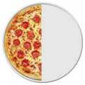
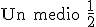
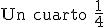
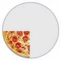
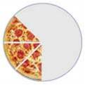
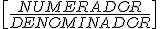

FRACCIONES Y DECIMALES
como parte de la unidad
Una fracción es una parte de la unidad
 
 
 
El número de arriba nos dice cuantas porciones tienes y el de abajo nos dice en cuantas porciones está la pizza cortada
Llamamos al número de arriba Numerador, es el número de partes que tienes.
Llamamos al número de abajo Denominador, es el número de partes en que está dividida la unidad

Obra publicada con Licencia Creative Commons Reconocimiento No comercial Compartir igual 3.0